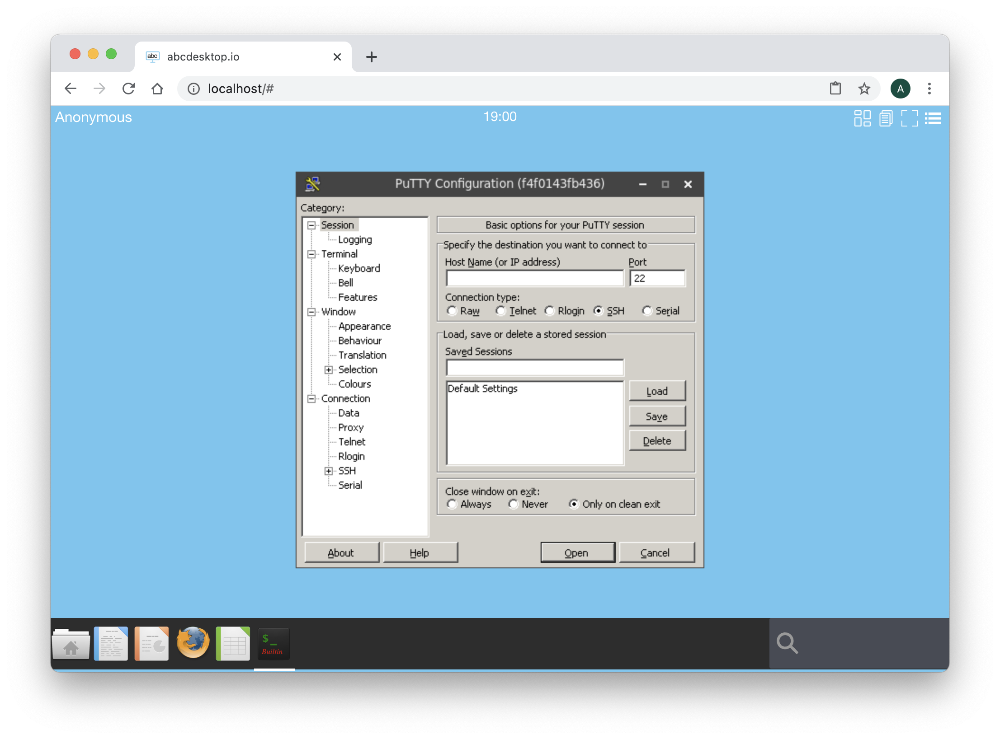

Build abcdesktop docker image for Microsoft Windows using Wine
Requirements
- Read the chapter Edit your configuration file in docker mode is mandatory
- Read the chapter Build abcdesktop docker image is mandatory.
- A running dockerd last version
- An access to the docker public registry
- An access to the ubuntu repository
- Nodejs installed on your host.
abcdesktop can run Microsoft Windows applications using Wine.
wine embedded in oc.template.gtk.wine image
To run Windows applications abcdesktop use wine. A dedicated image template source is ready to use as source of others Windows applications. This template is named abcdesktopio/oc.template.gtk.wine.
Start pulling this template image, if you don't have already done in the previous exercice :
docker pull abcdesktopio/oc.template.gtk.wine
This image embeded the architecture format win32 win64. By default the WINEARCH is set to win32. The playonlinux package is all ready installed.
Change the od.config configuration file
The homedirectorytype option
To share the home directory /home/balloonvolume data between containers, set the desktop.homedirectorytype to 'volume' in your od.config file.
Edit your own od.config file as described in the chapter Edit your configuration file in docker mode, and make sure that desktop.homedirectorytype is set to 'volume'
desktop.homedirectorytype: 'volume'
If need, run the docker-compose restart command in your abcdesktop directory where the od.config and the docker-compose.yml are located.
docker-compose restart
Build a new windows putty inside a docker container
In this exercice we are going to install and run putty.exe for Windows inside a docker container for abcdesktop.
PuTTY is an SSH and telnet client, developed originally by Simon Tatham for the Microsoft Windows platform.
Start an abcdesktop session. You can use an authenticated session using an authentication provider external or explicit, or you can do this exercice using Anonymous Authentification also know as the authentication provider implicit.
In this exercice we choose an Anonymous authentification, DO NOT CLOSE YOUR WEB BROWSER, you should not be able de reconnect with the same user context, and have to restart this exercice again.

Login using the Anonymous authentification provider.

Click on the menu and choose settings options

On the Settings dialog box, choose System option
Choose the User container tabs, and select the hostname value.

Copy this value into your clipboard. The hostname use the docker containerid value.
Keep your web browser open, and open a terminal shell on your server, to run docker shell commmand.
Run the docker inspect -f "{{ .HostConfig.Binds }}" and add your CONTAINER ID as parameter.
CONTAINER_ID=5719b77d3f2a
docker inspect -f "{{ .HostConfig.Binds }}" $CONTAINER_ID
where CONTAINER_ID is your own containerid value.
For example
docker inspect -f "{{ .HostConfig.Binds }}" 5719b77d3f2a
You should read the volume name starting by the prefix tmp- with your uuid value, and a second volume name starting by the prefix home- with your uuid:
[tmp-57be1e5b-0b14-4c05-ae79-75e9a03c77be:/tmp home-57be1e5b-0b14-4c05-ae79-75e9a03c77be:/home/balloon]
We are using the /tmp volume and the /home/balloon volume of your container.
If your are using an anonymous authentification, the name of your container id is formated as an uuid, for example
a32deda7-324f-4ee4-9e51-51c1aaf66bcf. The name of thetmpvolume istmp-a32deda7-324f-4ee4-9e51-51c1aaf66bcfand the name oftmpvolume ishome-a32deda7-324f-4ee4-9e51-51c1aaf66bcfIf your are using an LDAP authentification, the name of your container id is a string equal to the username, for example
hermes. The name of thetmpvolume istmp-hermesand the name oftmpvolume ishome-hermes.
Replace in the command the string TMP_VOLUMENAME by your own tmp volume name.
Replace in the command the string HOME_VOLUMENAME by your own home volume name.
docker run -it -v TMP_VOLUMENAME:/tmp -v HOME_VOLUMENAME:/home/balloon --user balloon abcdesktopio/oc.template.gtk.wine bash
For example with an anonymous user:
docker run -it -v tmp-a32deda7-324f-4ee4-9e51-51c1aaf66bcf:/tmp -v home-a32deda7-324f-4ee4-9e51-51c1aaf66bcf:/home/balloon --user balloon abcdesktopio/oc.template.gtk.wine bash
Great, you have started a new docker container. The oc.user container and your new container is sharing the same volume mounted as /tmp. You get a prompt inside the new docker container.
To run a command as administrator (user "root"), use "sudo <command>".
See "man sudo_root" for details.
balloon@721263d5dece:~$
Init the wine directory
wineboot --init
After few seconds you should read on the standard error
0014:err:ole:marshal_object couldn't get IPSFactory buffer for interface {00000131-0000-0000-c000-000000000046}
0014:err:ole:marshal_object couldn't get IPSFactory buffer for interface {6d5140c1-7436-11ce-8034-00aa006009fa}
0014:err:ole:StdMarshalImpl_MarshalInterface Failed to create ifstub, hres=0x80004002
0014:err:ole:CoMarshalInterface Failed to marshal the interface {6d5140c1-7436-11ce-8034-00aa006009fa}, 80004002
0014:err:ole:get_local_server_stream Failed: 80004002
0012:err:ole:marshal_object couldn't get IPSFactory buffer for interface {00000131-0000-0000-c000-000000000046}
0012:err:ole:marshal_object couldn't get IPSFactory buffer for interface {6d5140c1-7436-11ce-8034-00aa006009fa}
0012:err:ole:StdMarshalImpl_MarshalInterface Failed to create ifstub, hres=0x80004002
0012:err:ole:CoMarshalInterface Failed to marshal the interface {6d5140c1-7436-11ce-8034-00aa006009fa}, 80004002
0012:err:ole:get_local_server_stream Failed: 80004002
Could not find Wine Gecko. HTML rendering will be disabled.
Could not find Wine Gecko. HTML rendering will be disabled.
wine: configuration in L"/composer/.wine" has been updated.
And now download putty.exe from the web site https://www.putty.org/.
In this example, we use the 64 bits binary format
balloon@8e48719ae72f:~$ wget https://the.earth.li/~sgtatham/putty/latest/w64/putty.exe
Start the putty.exe with wine, with the command wine putty.exe
balloon@5719b77d3f2a:~$ wine putty.exe
After few seconds you should read on the standard error
0009:err:winediag:SECUR32_initNTLMSP ntlm_auth was not found or is outdated. Make sure that ntlm_auth >= 3.0.25 is in your path. Usually, you can find it in the winbind package of your distribution.
The wine prefix is WINEPREFIX=/composer/.wine, all files used by wine are stored in /composer/.wine directory.
On abcdesktop display, wine is starting the application putty, after few seconds, Putty is running :

You can use this Putty Windows application to connect to another host using ssh or telnet protocol.
The application Putty is opened and is running in the background.
At the right corner, write in the search bar the keyword shell
Click on the Web Shell icon, a new Terminal WebShell is now opened :

Run the command to list each X11 windows and get the WMClass name.
wmctrl -lx

Read the WM_CLASS of the Putty Wine application: putty.exe.Wine
Then exit the web shell and quit on the Putty application.
Wine has created a configuration directory in the default directory /composer/.wine.
Build the new putty.d image for abcdesktop
In this chapter we are going to build a new docker image for abcdesktop
The new image is the putty.
Create a directory named build, and create a directory icons inside build
mkdir build
mkdir build/icons
cd build
To build your own json file.
Create a json file named applist.json, inside build directory, and add the content to the json file.
[
{
"template": "abcdesktopio/oc.template.gtk.wine",
"preruncommands": [
"ENV WINEARCH=win64",
"USER $BUSER",
"RUN wineboot --init",
"RUN wget -O /composer/bin/putty.exe https://the.earth.li/~sgtatham/putty/latest/w64/putty.exe",
"RUN echo disable > $WINEPREFIX/.update-timestamp" ],
"args": "/composer/bin/putty.exe",
"cat": "utilities",
"debpackage": "",
"icon": "putty.svg",
"keyword": "putty,ssh,terminal",
"launch": "putty.exe.Wine",
"name": "putty-wine",
"displayname": "Putty Wine",
"path": "/usr/bin/wine"
}
]
To fill the data inside the json file :
| name | Type | Data |
|---|---|---|
cat |
string | utilities |
icon |
string | putty.svg |
keyword |
string | putty,ssh,terminal |
launch |
string | putty.exe.Wine |
name |
string | putty |
path |
string | /usr/bin/wine |
args |
string | /composer/bin/putty.exe |
template |
string | abcdesktopio/oc.template.gtk.wine |
You can read the following help lines.
catis the category, choose the most appropriate value in the list :[ 'office', 'games', 'graphics', 'development', 'utilities', 'education' ]iconis the name of the icon. abcdesktop support onlysvgicon file format. To get the icon file, look at the link https://raw.githubusercontent.com/abcdesktopio/oc.apps/main/icons/putty.svgkeywordis a list of the keywords to find the application. Set the value toputty,ssh,terminal.launchis the X11 Class name of the window. To get this value, we need to run the application on GNU/Linux (read the dedicated chapter below).nameis the name of the application. Set the value to putty.pathis the binary path to run the application.templateis the name of the parent image. The default image parent for wine isabcdesktopio/oc.template.gtk.wine.
{kind=link}
Save the putty icon file on SVG format to the icons directory.
wget -O icons/putty.svg https://raw.githubusercontent.com/abcdesktopio/oc.apps/main/icons/putty.svg
Build putty your from applist.json
To build your new image, download the make.js script file. make.js is located in the oc.apps repository. Look at https://github.com/abcdesktopio/oc.apps if you can not download this file.
Save make.js it to you build directory.
make.js is a nodejs JavaScript file. Node.js is a JavaScript runtime built on Chrome's V8 JavaScript.
If you don't have already nodejs installed on your system, go to the website nodejs download website and follow the instructions to install nodejs.
wget https://raw.githubusercontent.com/abcdesktopio/oc.apps/main/make.js
In the build directory, you should have
drwxr-xr-x 5 devuser staff 160 Mar 11 15:15 .
drwxr-xr-x+ 31 devuser staff 992 Mar 11 15:15 ..
-rw-r--r-- 1 devuser staff 497 Mar 11 15:15 applist.json
drwxr-xr-x 3 devuser staff 96 Mar 11 15:02 icons
-rw-r--r-- 1 devuser staff 6112 Mar 11 15:12 make.js
./icons:
total 8
drwxr-xr-x 3 devuser staff 96 Mar 11 15:02 .
drwxr-xr-x 5 devuser staff 160 Mar 11 15:15 ..
-rw-r--r-- 1 devuser staff 1909 Oct 31 2015 putty.svg
Run the command make.js
node make.js
make.js build a new DockerFile for putty application. Remember, all application images use container images.
You should get the output
{
template: 'abcdesktopio/oc.template.gtk.wine',
preruncommands: [
'ENV WINEARCH=win64',
'USER $BUSER',
'RUN wineboot --init',
'RUN echo disable > $WINEPREFIX/.update-timestamp',
'RUN wget -O /composer/bin/putty.exe https://the.earth.li/~sgtatham/putty/latest/w64/putty.exe'
],
args: '/composer/bin/putty.exe',
cat: 'utilities',
debpackage: '',
icon: 'putty.svg',
keyword: 'putty,ssh,terminal',
launch: 'putty.exe.Wine',
name: 'putty-wine',
displayname: 'Putty Wine',
path: '/usr/bin/wine'
}
The new files putty-wine.d has been generated :
putty-wine.dis the Dockerfile for your putty abcdesktop application
Read the content of the Dockerfile putty-wine.d.
List all labels, and confirm that the icon file is uuencoded format. Uuencoding is a form of binary-to-text encoding.
Now it's time to build your putty app. Run the command docker build command.
docker build --build-arg TAG=latest -f putty-wine.d -t putty-wine.d .
You should read on the standard ouput
[+] Building 21.6s (10/10) FINISHED
=> [internal] load build definition from putty-wine.d 0.0s
=> => transferring dockerfile: 12.46kB 0.0s
=> [internal] load .dockerignore 0.0s
=> => transferring context: 2B 0.0s
=> [internal] load metadata for docker.io/abcdesktopio/oc.template.gtk.wine:dev 0.0s
=> CACHED [1/6] FROM docker.io/abcdesktopio/oc.template.gtk.wine:dev 0.0s
=> [2/6] RUN wineboot --init 10.9s
=> [3/6] RUN wget -O /composer/bin/putty.exe https://the.earth.li/~sgtatham/putty/latest/w64/putty.exe 0.6s
=> [4/6] RUN if [ -d /usr/share/icons ]; then cd /usr/share/icons; /composer/safelinks.sh; fi 9.2s
=> [5/6] RUN if [ -d /usr/share/pixmaps ]; then cd /usr/share/pixmaps; /composer/safelinks.sh; fi 0.4s
=> [6/6] WORKDIR /home/balloon 0.0s
=> exporting to image 0.4s
=> => exporting layers 0.3s
=> => writing image sha256:2cbe019726e67ecb83af74e944ff932705086e632ab4a57dec719be5e7e654cd 0.0s
=> => naming to docker.io/library/putty-wine.d 0.0s
Now, your new image is ready to run.
Run your putty for abcdesktop
The API server does not know that you have built your new 2048 application. You have to send a message to the API server, to update the API Server images cache list.
Using your web browser or a curl command, call a http request to notify the API Server
http://localhost/API/manager/buildapplist
This http request return a json object, with all docker images details :
Reloead your web browser connected on the abcdesktop website, and log your again as anonymous.
In the search area, type putty. Click on the Putty Application.

Wine is starting your Putty application :

Great, you have build a abcdesktop image for Putty, build the application image Putty. You can push this image to your own private docker registry.
Optional add a persistant user.reg and system.reg windows registry files
This is a quick and dirty solution, but it works fine
Your wine configuration is stored in /composer/.wine, and by default user.reg and system.reg are located in the WINEPREFIX directory. The user.reg and system.reg files build when wine starts.
To make a copy of fresh running putty-wine.d image.
Start your putty-wine.d image and using a shell located the new user.reg and system.reg files
docker ps -a | grep putty-wine
65d95f4e7717 putty-wine.d:latest "/composer/appli-doc" 16 seconds ago Up 15 seconds anonymous-putty-wine-7877d100de0b4363ad24240d67032c8c
Then copy files using the docker cp command
CONTAINERID=65d95f4e7717
docker cp $CONTAINERID:/composer/.wine/user.reg .
docker cp $CONTAINERID:/composer/.wine/system.reg .
Add them to your default putty-wine.d image using applist.json file :
[
{
"template": "abcdesktopio/oc.template.gtk.wine",
"preruncommands": [
"ENV WINEARCH=win64",
"USER $BUSER",
"RUN wineboot --init",
"RUN wget -O /composer/bin/putty.exe https://the.earth.li/~sgtatham/putty/latest/w64/putty.exe",
"RUN echo disable > $WINEPREFIX/.update-timestamp",
"COPY --chown=$BUSER:$BUSER user.reg system.reg /composer/.wine" ],
"args": "/composer/bin/putty.exe",
"cat": "utilities",
"debpackage": "",
"icon": "putty.svg",
"keyword": "putty,ssh,terminal",
"launch": "putty.exe.Wine",
"name": "putty-wine",
"displayname": "Putty Wine",
"path": "/usr/bin/wine"
}
]
Rebuild your Dockerfile
node make.js
{
template: 'abcdesktopio/oc.template.gtk.wine',
preruncommands: [
'ENV WINEARCH=win64',
'USER $BUSER',
'RUN wineboot --init',
'RUN wget -O /composer/bin/putty.exe https://the.earth.li/~sgtatham/putty/latest/w64/putty.exe',
'RUN echo disable > $WINEPREFIX/.update-timestamp',
'COPY --chown=$BUSER:$BUSER user.reg system.reg /composer/.wine'
],
args: '/composer/bin/putty.exe',
cat: 'utilities',
debpackage: '',
icon: 'putty.svg',
keyword: 'putty,ssh,terminal',
launch: 'putty.exe.Wine',
name: 'putty-wine',
displayname: 'Putty Wine',
path: '/usr/bin/wine'
}
Building putty.exe.Wine
Run the command docker build command.
docker build --build-arg TAG=latest -f putty-wine.d -t putty-wine.d .
Now your wine keep your registry's updates.